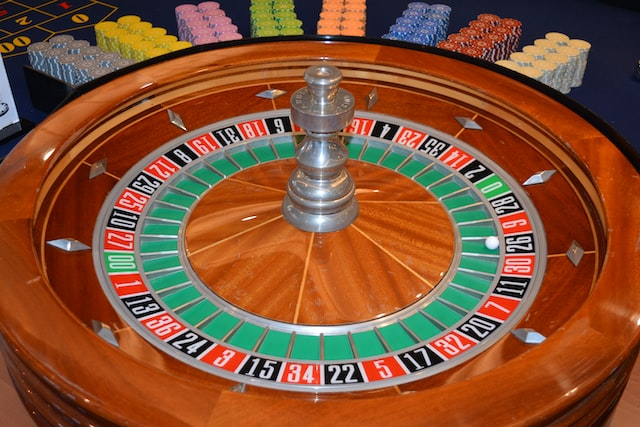

Continuous Distributions and Normal Approximations
Connections to boxes, continuous distributions, and a fundamental result
Imagine that a regular patron of a bar has hit the bottle rather hard one evening. When the bar closes for the night, they come out to weave their way home. Home is very near, in fact, just straight down the road. If our inebriate walks straight in the direction of their home, they can be there very soon. The only problem is - they can’t walk straight. Every minute, they move in a random direction: backwards or forwards with equal probability. Where will they be after \(n\) minutes? This is the famous “drunkard’s walk” problem1.
Each time step (say, each minute), they go backwards or forwards with equal probability, so it is as if they are walking on the real line, and each minute they go either forward \((+1)\) or backwards \((+1)\), each with probability \(\displaystyle \frac{1}{2}\). Where will our tipsy traveler be after \(n\) steps?
Here is a plot of a simulation of our itinerant inebriate’s path for \(n = 30\):
Note that the graph is spread out to show the number of steps taken, but the walker is just walking up and down the \(y\)-axis, since they can only go backwards and forwards. This kind of walk is called a simple random walk. Random walks have applications in many fields including physics and finance.They are used to model photons escaping from the center of the sun (though photons can scatter in any direction), a molecule in a liquid, the price of a stock etc.
What we have shown here is one possible path our random walker might take and where they might land up after \(n = 30\) minutes. We have plotted this by defining a modified Bernoulli random variable \(X\) that takes the values \(-1\) and \(1\) with an equal probability of \(\displaystyle \frac{1}{2}\). Then we sample \(30\) times from this vector with replacement. Notice here that we use an argument in sample() that we haven’t used before, prob. This defines the weights used for sampling. In this case they are the same, but they might be different. We will discuss this further in the “Ideas in Code” section. Note that the expected value of our Bernoulli random variable \(X\) is \(0\). What is its variance and SD?
Check your answer
\[ X = \begin{cases} -1, \; \text{ with prob } 0.5\\ 1, \; \text{ with prob } 0.5\\ \end{cases} \] \[ E(X) = (-1) \times 0.5 + 1 \times 0.5 = 0. \] \[ Var(X) = E(X^2) - E(X)^2 = 1 - 0 = 1 = SD(X). \]In the code below we are defining a vector with the values taken by \(X\), a vector of probabilities for these values, and the distance traveled by the walker in \(n\) steps:
x <- c(-1,1) # defining the values taken by X
px <- c(1/2,1/2) # defining the probabilities of these values
sum(sample(x, size = 30, prob = px, replace = TRUE))For example,in the path shown in the figure above, the first \(5\) steps taken (\(-1\) represents backwards and \(+1\) forward): \(1, -1, -1, 1, -1, -1\). The position at each step is the sum of all the steps thus far, so this sequence becomes \(1, 0, -1, 0, -1, -2\). Notice that the end position after \(30\) steps is \(4\). One might ask - what is the probability that the position is \(4\) after \(30\) steps? How would we compute this probability? This seems very difficult, so let’s look at the empirical distribution of the position after \(n = 30\) steps (we simulate many many such paths and look at the value of sum of the \(+1\) and \(-1\) steps at the end).
Well, that’s a nice shape! This is an example of the fundamental result mentioned in the subtitle of this chapter. Now, before we can compute the expected value of the walker’s position after \(n\) steps or the associated probabilities, we need to learn about very special sets of random variables.
Independent and identically distributed random variables
- IID random variables
- If we have \(n\) independent random variables \(X_1, X_2, \ldots, X_n\) such that they all have the same pmf \(f(x)\) and the same cdf \(F(x)\), we call the random variables \(X_1, X_2, \ldots, X_n\) independent and identically distributed random variables. We usually use the abbreviation i.i.d or iid for ``independent and identically distributed’’.
This is a very important concept that we have already used to compute the expected value and variance of a binomial random variable by writing it as a sum of iid Bernoulli random variables.
A common example is when we toss a coin \(n\) times and count the number of heads - each coin toss can be considered a Bernoulli random variable, and the total number of heads is a sum of \(n\) iid Bernoulli random variables.
Example: Drawing tickets with replacement
Consider the box shown below:
Say I draw \(25\) tickets with replacement from this box, and let \(X_k\) be the value of the \(k\)th ticket. Then each of the \(X_k\) has the same distribution, and they are independent since we draw the tickets with replacement. Therefore \(X_1, X_2, \ldots, X_{25}\) are iid random variables, and they each have a distribution defined by the following pmf: \[ f(x) = \begin{cases} 0.2, \; x = 0, 3, 4 \\ 0.1, \; x = 2 \\ 0.3, \; x = 1 \end{cases} \]
The Box Model2
We have seen that we can always represent a discrete random variable using tickets in a box. We define the tickets so that a ticket drawn at random from the box will have the same probability distribution as the random variable. Then it becomes very easy to define \(n\) random variables that are independent, and identically distributed (as in the example above), where each random variable is a draw with replacement from the same box. Representing the random variable using a box of tickets also makes it easy to set up a simulation, since we can just define a vector representing the box, and use the function sample() setting the argument replace = TRUE. In this way, we can represent a chance process in which some action that defines a random variable is repeated over and over again, as a box of tickets from which we draw tickets with replacement over and over again.
We could do this for any of the examples that we have seen - die rolls, coin tosses, spins of a roulette wheel etc. Once we represent the random variable using a box of tickets, then it is easy to compute the expected value of the random variable - it is just the average of the tickets in the box, and the variance of the random variable is the variance of the tickets in the box. Note that we compute the population variance, so we divide by \(n\) not \(n-1\), since the box represents the population, from which we draw a sample. Let’s revisit some examples:
Rolling a pair of dice and summing the spots
Suppose we want to represent the rolling of a pair of dice and summing the spots using a box with appropriately marked tickets. Our box could be:
Let \(X_1\) represent drawing a ticket at random from this box. Then \(X_1\) has the discrete uniform distribution. To represent the sum of spots of a pair of dice, we would draw twice with replacement from this box, calling the result of the first draw \(X_1\) and the second \(X_2\). Notice that \(X_1\) and \(X_2\) are independent, since we drew with replacement, and have the same probability distribution, so are identically distributed. That is, \(X_1\) and \(X_2\) are i.i.d. random variables, and we want to know about the sum of these. We can define \(S = X_1+X_2\) and use the box to simulate the distribution of \(S\).
Spinning a Vegas roulette wheel and betting on red

We know that an American roulette wheel has \(18\) red pockets, \(18\) black pockets and \(2\) green pockets. So if we spin it, the chance of winning if we bet on red is \(18/38\). Suppose we bet a dollar on red, then if the ball lands in a red pocket, we get our dollar back and another dollar. If it lands on black, we lose the dollar we bet. We are usually interested in our “net gain” if we play over and over again, that is, our total winnings (or losses) after \(n\) spins. We can use a box of tickets to model the net gain in \(n\) spins by letting the box represent the possible result of one spin, and then drawing \(n\) times at random from this box. What would the box to represent the result of one spin of a roulette wheel look like?
Check your answer
The box would have \(38\) tickets. \(18\) tickets would be marked with \(+1\) and \(20\) tickets would be marked with \(-1\). This would represent the result of one spin. Suppose we want to see what the net gain would be from playing \(100\) times, we would draw \(100\) times with replacement from this box, and sum the draws.
How would you simulate this process (of spinning the wheel \(n\) times) in R?
We can generalize the ideas in the roulette example to any set up where we have iid discrete random variables. We need to think about three things:
What are the values of the tickets in the box?
How many tickets of each value?
How many times do we need to draw?
We are usually interested in the sum or the average of \(n\) iid random variables, that is, the sum or average of \(n\) draws, and the probability distribution of this sum (or average).
Sums and averages of random variables
Sums
Suppose we make \(n\) draws at random with replacement from the box in the example, reproduced here:
Suppose we sum the drawn tickets. We denote the sum of \(n\) random variables by \(S_n\). Note that \(S_n = X_1 + X_2 + \ldots + X_{n}\) is also a random variable.
Let’s simulate this by letting \(n=25\) and sampling \(25\) tickets with replacement, summing them, and then repeating this process. Note that the smallest sum we can get is \(S_n = 0\) and the largest is \(100\). (Why?)
[1] "The sum of 25 draws is 56"Now we will repeat this process (of drawing \(25\) tickets with replacement and summing the draws) \(10\) times (note how replicate() is used) :
Code
[1] 56 50 64 51 49 41 64 44 45 51You can see that the sum \(S_n\) is random and keeps changing with each iteration of the process (because the \(X_k\) are random numbers).
Since we know the distribution of the \(X_k\) (which is the probability distribution of a single draw from the box), we can compute \(E(X_k)\) and \(Var(X_k)\). Note that since the \(X_1, X_2, \ldots, X_{n}\) are iid, all the \(X_k\) have the same mean and variance. What about their sum \(S_n\)?
What are \(E(S_n)\) and \(Var(S_n)\), when \(n = 25\)?
\(E(X_k) = 0.2\times 0 + 0.3 \times 1 + 0.1 \times 2 + 0.2 \times 3 + 0.2 \times 4 = 1.9\).
(Note that you could also have just computed the average of the tickets in the box.)
\(Var(X_k) = \sum_x (x-1.9)^2 \cdot P(X=x) = 2.09\)
\(E(S_{25}) = E(X_1 + X_2 + \ldots +X_{25}) = 25 \times E(X_1) = 25 \times 1.9\).
(We just use \(X_1\) since all the \(X_k\) have the same distribution. We are using the additivity of expectation here.)
Since the \(X_k\) are independent, we can use the addivity of variance to get that
\[ \begin{aligned} Var(S_{25}) &= Var(X_1 + X_2 + \ldots +X_{25})\\ &= Var(X_1) + Var(X_2) + \ldots +Var(X_{25})\\ &= 25 \times 2.09 \end{aligned} \]
We can see that the expectation and variance of the sum scale with \(n\), so that if \(S_n\) is the sum of \(n\) iid random variables \(X_1, X_2, \ldots, X_n\), then:
\[ \begin{aligned} E(S_n) &= n \times E(X_1) \\ Var(S_n) &= n \times Var(X_1)\\ \end{aligned} \] This does not hold for \(SD(S_n)\), though. For the SD, we have the following ``law’’ for the standard deviation of the sum.
- Square root law for sums of iid random variables
- The standard deviation of the sum of \(n\) iid random variables is given by: \[ SD(S_n) = \sqrt{n} \times SD(X_1) \]
Since all the \(X_k\) have the same distribution, we can use \(X_1\) to compute the mean and SD of the sum. This law says that if the sample size increases as \(n\), the expected value scales as the number of random variables, but the standard deviation of the sum increases more slowly, scaling as \(\sqrt{n}\). In other words, if you increase the number of random variables you are summing, the spread of your sum about its expected value increases, but not as fast as the expectation of the sum.
Example: The drunkard’s walk
Back to our inebriated random walker who is trying to walk home. Recall that at each time step, the walker moves forward or backward with equal probability. After \(n\) steps, their position can be written as \[ S_n = X_1 + X_2 + \ldots X_n \] where \(X_k = +1\) or \(-1\) with probability \(0.5\) each. \(E(X_k) = 0\) and \(Var(X_k) = 1\), so we get that: \[ E(S_n) = 0, \; Var(S_n) = n, \text{ and } SD(n) = \sqrt{n}. \]
Averages
We denote the average of the random variables \(X_1, X_2, \ldots, X_n\) by \(\displaystyle \overline{X} =\frac{S_n}{n}\).
\(\displaystyle \overline{X}\) is called the sample mean (where the “sample” consists of \(X_1, X_2, \ldots, X_n\)).
\[ E(\overline{X}) = E\left(\frac{S_n}{n}\right) = \frac{1}{n} E(S_n) = E(X_1) \]
This means that the expected value of an average does not scale as \(n\) (as the sum did), but \(E(\overline{X})\) is the same as the expected value of a single random variable. Let’s check the variance now:
\[ Var(\overline{X}) = Var\left(\frac{S_n}{n}\right) = \frac{1}{n^2} Var(S_n) = \frac{n}{n^2} Var(X_1) \]
Therefore \(Var(\overline{X}) = \displaystyle \frac{1}{n} Var(X_1)\)
Note that, just like the sample sum \(S_n\), the sample mean \(\displaystyle \overline{X}\) is a random variable, and its variance scales as \(\displaystyle \frac{1}{n}\), which implies that \(SD(\overline{X})\) will scale as \(\displaystyle \frac{1}{\sqrt{n}}\). Let’s write that formally:
- Square root law for averages of iid random variables
- The standard deviation of the average of \(n\) iid random variables is given by: \[ SD(\overline{X}) = \frac{1}{\sqrt{n}}SD(X_1) \]
- Standard error
- Since \(S_n\) and \(\overline{X}\) are numbers computed from the sample \(X_1, X_2, \ldots, X_n\), they are called statistics. We use the term standard error to denote the standard deviation of a statistic: \(SE(S_n)\) and \(SE(\overline{X})\) to distinguish it from the standard deviations of random variables that do not arise as statistics that are computed from \(X_1, X_2, \ldots, X_n\). We will see more about these statistics later in the course.
Example: Probability distributions for sums and averages
Let’s go back to the box of colored tickets, draw from this box \(n\) times, and then compute the sum and average of the draws. We will simulate the distribution of the sum and the average of 25 draws to see what the distribution of the statistics looks like. Note that when \(n=25\), \(E(S_n) = 25\times 1.9 = 47.5\) and \(SE(S_n) = \sqrt{n} \times SD(X_1) = 5 \times 1.45 = 7.25\)
What do we notice in these figures? First, we see the bell-shape again! Note that the black line is the expected value. We see that the center of the distribution for the sample sum grows as the sample size increases (look at the x-axis), but this does not happen for the distribution of the sample mean. You can also see that the spread of the data for the sample sum is much greater when n = 100, but this does not happen for the distribution of the sample mean. Now, the \(y\) axis has neither counts nor proportion, but it has density. This makes the histogram have a total area of one, similar to a probability histogram. Now we can think of this histogram, called a density histogram as an approximation of the probability histogram.
- Density histograms
- These are histograms for which the total area of all the bars add up to \(1\). The vertical axis is called density and the units are such that the height of each bar times its width gives the proportion of the values that fall in the corresponding interval of the histogram.
We see that we have moved from bar graphs to histograms, which is what we need when we consider random variables that are not restricted to taking particular values. These are called continuous random variables.
Continuous distributions
So far, we have talked about discrete distributions, and the probability mass functions for such distributions. Consider a random variable that takes any value in a given interval. Recall that we call such random variables continuous. In this situation, we cannot think about discrete bits of probability mass which are non-zero for certain numbers, but rather we imagine that our total probability mass of \(1\) is smeared over the interval, giving us a smooth curve, called a density, rather than a histogram. To define the probabilities associated with a continuous random variable, we define a probability density function (pdf) rather than a probability mass function.
Probability density function of a distribution
- Probability density function
- This is a function \(f(x)\) that satisfies two conditions:
- it is non-negative (\(f(x) \ge 0\)) and
- the total area under the curve \(y = f(x)\) is 1. That is, \[ \int_{-\infty}^\infty f(x) dx = 1 \]
If \(X\) is a continuous random variable, we don’t talk about \(P(X = x\)), that is, the probability that \(X\) takes a particular value. Rather, we ask what is the probability that \(X\) lies in an interval around \(x\). Since there are infinitely many outcomes in any interval on the real line, no single outcome can have positive probability, so \(P(X=x) =0\) for any particular \(x\) in the interval where \(X\) is defined. To find the probability that \(X\) lies in an interval \((a,b)\), we integrate \(f(x)\) over the interval \((a,b)\). That is, we find the area under the curve \(f(x)\) over the interval \((a, b)\).
- The probability that a continuous random variable lies in an interval
- The probability that \(X\) is in the interval \((a,b)\) is given by \[ P(a < X < b) = P(X \text{ is in the interval }(a,b)) = \int_{a}^b f(x) dx \]
Note that because a single point will not add any area, we have that: \[ P(a < X < b) = P(a \le X < b) = P(a < X \le b) = P(a \le X \le b) \]
Just as we did for discrete random variables, we define the cumulative distribution function for a continuous distribution.
Cumulative distribution function \(F(x)\)
- Cumulative distribution function (cdf)
- The cdf is defined the same way as for discrete random variables, except that we now have an integral instead of a sum. \[ F(x) = P(X \le x) = \int_{-\infty}^x f(t) dt \]
The difference is in how we compute \(P(X \le x)\). There are no discrete bits of probability mass for \(F(x)\) to collect. Instead we have that \(F(x)\) is the area under the curve \(y = f(x)\) all the way up to the point \(x\).
Special distributions
Just as in the case of discrete distributions, we have many special named continuous distributions. We are going to mention two of them here. The first is the a very easy distribution to think about with a rectangulare geometry that is easy to think about: the uniform distribution. The second distribution we mention here has a shape that has already shown up in examples in these note - its probability density function has a bell-shape. This is the Normal distribution and it is the most ubiquitous distribution in statistics and its bell shaped density curve is used in many disciplines.
Let’s consider the uniform distribution first.
The Uniform(0,1) distribution
Let \(X\) be a random variable that takes values in the interval \((0,1)\) with probability density function \(f(x) = 1\) for \(x\) in \((0,1)\) and \(f(x) = 0\) outside of this interval.
Because \(f(x)\) is flat, all intervals of the same length will have the same area, so the distribution defined by \(f\) is called the Uniform\((0,1)\) distribution. If a random variable \(X\) has this distribution, we denote this by \(X \sim U(0,1)\). The probability that \(X\) is in any interval \((a, b)\) which is a sub-interval of \((0,1)\) is given by the area of the rectangle formed by the interval and \(y=f(x)\), and so is just the width of the interval.
If you know that \(X\) has a \(Unif(a, b)\) distribution, you should try to use geometry to figure out probabilities as this is usually easier than integrating.
Example: cdf for the Uniform (0,1) distribution
Let \(X \sim U(0,1)\). What is \(F(0.3)\)?
Check your answer
\[ F(0.3) = P(X \le 0.3) = \int_{-\infty}^{0.3} f(t) dt = \int_0^{0.3} 1 dt = 0.3 \] In general, for the \(U(0,1)\) distribution, \(F(x) = x\).
The Normal distribution
The Normal distribution, which is also called the Gaussian distribution (after the great 19th century German mathematician Carl Friedrich Gauss3) describes a continuous random variable that has a density function with a familiar bell shape4.
If a random variable \(X\) follows a normal distribution, we write
\[X \sim \textrm{N}(\mu, \sigma^2)\]
where \(\mu\) is the mean of the distribution and \(\sigma\) is its standard deviation. (The particular normal distribution shown above is the standard normal distribution, where \(\mu = 0\) and \(\sigma = 1)\). The curve is completely defined by these two numbers and they are called the parameters of the distribution. Every normal curve can be matched up to the standard normal by transforming the \(x\) to standard units which means shifting the curve so it is centered at \(0\) (subtracting \(\mu\)) and scaling the curve so the standard deviation is \(1\) (dividing by \(\sigma\)).
We can calculate the probability of any event related to \(X\) by finding the area under the curve corresponding to that event. That includes the probability that \(X\) falls within a particular interval. In the table below, we record the probabilities of three such intervals.
| Interval | Area under the normal curve |
|---|---|
| Between -1 and 1 | 0.68 |
| Between -2 and 2 | 0.95 |
| Between -3 and 3 | 0.997 |
So if we know a particular distribution is similar in shape to the normal distribution, we’re able to calculate the probabilities that the random variable falls within a particular interval.
The Central Limit Theorem
The normal curve is enormously useful because many data distributions are similar to the normal curve, so we can use the areas under the normal curve to approximate the areas of the data distributions to figure out proportions. The reason so many data distributions approximately follow a normal distribution is because of one of the most fundamental results in statistics called the Central Limit Theorem. This astounding result says that sums (and averages) of independent and identically distributed random variables will follow an approximately normal distribution (after transforming them to standard units) as the sample size grows large. If we restate this in terms of our box model, this theorem says that, for large enough \(n\), if we draw \(n\) times from a box of tickets with replacement, then the probability distribution of the sum and the average of the draws (standardized) will be approximately normal, regardless of the distribution of the tickets in the box. This means that the tickets in the box can be anything, but as long as we draw enough times, the sum will have an approximately bell-shaped distribution.
Since many useful statistics can be written as the sum or mean of iid random variables, this is a very important and useful theorem, and we will use it extensively for inference in the next unit.
Recall our hammered homeseeker from the beginning of this chapter, and the bell-shaped distribution of their position after half an hour. Since their position can be written as a sum of all their steps (which were \(+1\) or \(-1\)), the Central Limit Theorem applies to the probability distribution of the sum, and that is why the distribution is bell-shaped. Using the normal approximation and the empirical rule, we can say that with probability about \(32\%\), our tipsy friend will be farther than one standard deviation from the starting point, which was the bar. Recall that one standard deviation for \(n=30\) is \(\sqrt{n} \approx 5.5\) steps. So he may be close to his home (with about \(16\%\) probability) or totally in the other direction (also with about \(16\%\) probability).
Ideas in code
Useful functions
Uniform\((a, b)\)
-
dunifcomputes the density \(f(x)\) of \(X\) where \(f(x) = \displaystyle \frac{1}{b-a}\), for \(a < x < b\).
- Arguments:
-
x: the value of \(x\) in \(f(x)\) -
min: the parameter \(a\), the lower end point of the interval for \(X\). The default value ismin = 0 -
max: the parameter \(b\), the upper end point of the interval for \(X\). The default value ismax = 1
-
-
punifcomputes the cdf \(F(x) = P(X \le x)\) of \(X\).
- Arguments:
-
q: the value of \(x\) in \(F(x)\) -
min: the parameter \(a\), the lower end point of the interval for \(X\). The default value ismin = 0 -
max: the parameter \(b\), the upper end point of the interval for \(X\). The default value ismax = 1
-
-
runifgenerates random numbers from the \(Unif(a,b)\) distribution.
- Arguments:
-
n: the size of the sample we want -
min: the parameter \(a\), the lower end point of the interval for \(X\). The default value ismin = 0 -
max: the parameter \(b\), the upper end point of the interval for \(X\). The default value ismax = 1
-
Normal\((\mu, \sigma^2)\)
-
dnormcomputes the density \(f(x)\) of \(X \sim N(\mu,\sigma^2)\)
- Arguments:
-
x: the value of \(x\) in \(f(x)\) -
mean: the parameter \(\mu\), the mean of the distribution. The default value ismean = 0 -
sd: the parameter \(\sigma\), the sd of the distribution. The default value issd = 1
-
-
pnormcomputes the cdf \(F(x) = P(X \le x)\) of \(X\).
- Arguments:
-
q: the value of \(x\) in \(F(x)\) -
mean: the parameter \(\mu\), the mean of the distribution. The default value ismean = 0 -
sd: the parameter \(\sigma\), the sd of the distribution. The default value issd = 1
-
-
rnormgenerates random numbers from the Normal\((\mu, \sigma^2)\) distribution.
- Arguments:
-
n: the size of the sample we want -
mean: the parameter \(\mu\), the mean of the distribution. The default value ismean = 0 -
sd: the parameter \(\sigma\), the sd of the distribution. The default value issd = 1
-
Example
Let’s verify the empirical rule for the standard normal random variable:
Note that (for example) \(P(-1 \le X \le 1) = F(1) - F(-1)\):
The argument prob in the function sample()
We have seen the function sample(), but so far, have only used it when we were sampling uniformly at random. That is, all the values are equally likely. We can sample according to a weighted probability, though, by putting in a vector of probabilities. Let’s look at the example of net gain while betting on red on a roulette spin. Recall that if we bet a dollar on red, then our net gain is \(+1\) with a probability of \(\displaystyle \frac{18}{38}\) and \(-1\) with a probability of \(\displaystyle \frac{20}{38}\).
gain <- c(1,-1) # define the gain for a single spin
prob_gain <- c(18/38,20/38) #define the corresponding probabilities
exp_gain <- sum(gain*prob_gain)
exp_gain[1] -0.05263158set.seed(123)
#simulate gain from 10 spins of the wheel
sample(x = gain, size = 10, prob = prob_gain, replace = TRUE) [1] -1 1 -1 1 1 -1 1 1 1 -1#simulate net gain from 10 spins of the wheel which would sum these
sum(sample(x = gain, size = 10, prob = prob_gain, replace = TRUE))[1] 0Here is a simulation showing the Central Limit Theorem at work, with the empirical distribution becoming gradually more bell-shaped. Net gain is the sum of \(n\) draws with replacement from the vector gain defined above using the prob_gain vector.
Summary
We defined the expected value or the mean of a discrete random variable and listed the properties of expectation including linearity and additivity.
We defined the variance and standard deviation of a random variable. Both expectation and variance (and therefore standard deviation) are constants associated to the distribution of the random variable. The variance is more convenient than the sd for computation because it doesn’t have square roots. However, the units are squared, so you have to be careful while interpreting the variance. We discussed the properties of variance and standard deviation.
We wrote down the expected values and variance for various special random variables.
Footnotes
The box model was introduced by Freedman, Pisani, and Purves in their textbook Statistics↩︎
Another instance where Abraham De Moivre was the first person to discover a distribution, but it was named after someone else. You can read about De Moivre at https://mathshistory.st-andrews.ac.uk/Biographies/De_Moivre/.↩︎
For a normally distributed random variable, \(f(x) = \frac{1}{\sigma \sqrt{2 \pi}} e^{\frac{1}{2}\left(\frac{x-\mu}{\sigma}\right)^2}\). Read more on Wikipedia: https://en.wikipedia.org/wiki/Normal_distribution↩︎